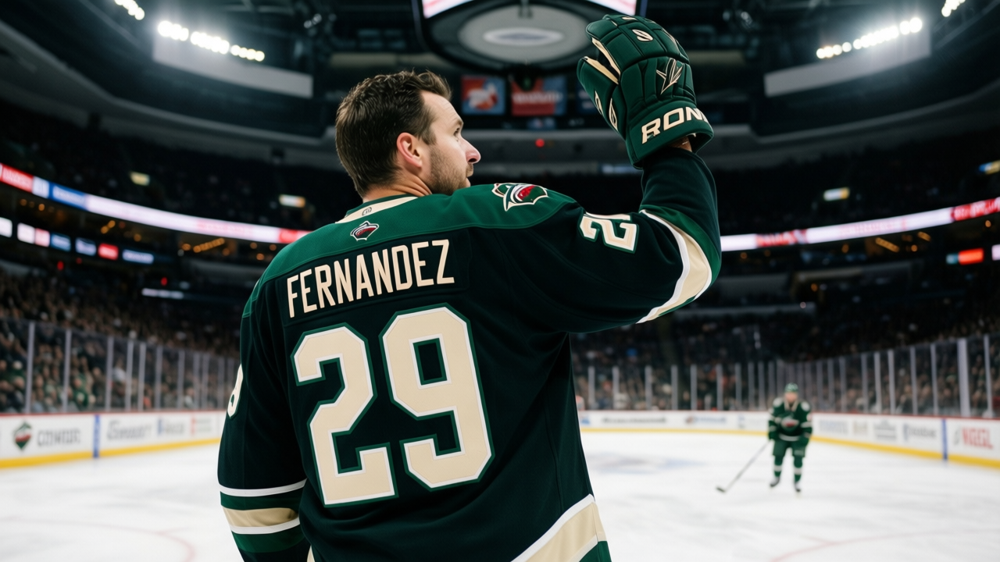

Goalie Watch: Fernandez has started 36 of 40 in Minnesota, and the Wild are 12-23-2
No other goaltender outside Washington and Atlanta carries a share that heavy for a team with that many losses
 Ray CallumSenior correspondent · Home Ice Network
Ray CallumSenior correspondent · Home Ice Network
 Manny Fernandez87 has started 36 of
Manny Fernandez87 has started 36 of  Minnesota Wild's 40 games. That is 90 percent of the workload for a club sitting 12-23-2 with 32 points and the third-worst goals-against total in the Northwest at 157 in 40 outings.
Minnesota Wild's 40 games. That is 90 percent of the workload for a club sitting 12-23-2 with 32 points and the third-worst goals-against total in the Northwest at 157 in 40 outings.
Only two goalies in the league carry a higher share.  Byron Dafoe76 in
Byron Dafoe76 in  Atlanta Thrashers is at 95 percent on an 11-21-2 team.
Atlanta Thrashers is at 95 percent on an 11-21-2 team.  Olaf Kolzig87 in
Olaf Kolzig87 in  Washington Capitals sits at 92 percent, but Washington is 20-13-5 and in a playoff spot. Fernandez is the only goalie in that top three whose club is under .300.
Washington Capitals sits at 92 percent, but Washington is 20-13-5 and in a playoff spot. Fernandez is the only goalie in that top three whose club is under .300.
Minnesota Wild has 21 injury spells this season but only 59 days lost, the fewest days of any club in the 30-club league. The absences are short-term nagging injuries that clear in two or three games. None of the 21 spells belongs to Fernandez. The Wild are healthy enough to rotate goaltenders and have chosen not to.
 Dwayne Roloson86 has 9 starts and a 22 percent share.
Dwayne Roloson86 has 9 starts and a 22 percent share.  Jean-Marc Pelletier79 has appeared once. The rotation, if you can call it that, gives Fernandez four days off in every five and a half.
Jean-Marc Pelletier79 has appeared once. The rotation, if you can call it that, gives Fernandez four days off in every five and a half.
Minnesota Wild plays  Los Angeles Kings on Saturday,
Los Angeles Kings on Saturday,  Columbus Blue Jackets on Monday and
Columbus Blue Jackets on Monday and  Phoenix Coyotes on Wednesday, three home dates in five days, before heading to
Phoenix Coyotes on Wednesday, three home dates in five days, before heading to  Edmonton Oilers on Tuesday the 11th. A fourth game in six nights puts Fernandez's total at 40 starts before the All-Star break.
Edmonton Oilers on Tuesday the 11th. A fourth game in six nights puts Fernandez's total at 40 starts before the All-Star break.
At 12 wins through 40 games the Wild are out of the playoff race in the Northwest by 20 points. Over the next six weeks the question is whether a 36-year-old workload pattern built around a 12-win team holds up in a 70-game season. Fernandez has not missed a start since November.